Week 2: Deterministic Functions and the Bestiary
NRES 746
Aug. 31-Sept. 2, 2026
R code from this page is also in the companion script. No packages beyond base R are needed.
This material follows Bolker, Ecological Models and Data in R, chapter 3: finding out about functions numerically (3.3, pp. 102-105) and analytically (3.4, pp. 106-119), the bestiary of functions (3.5, pp. 119-134), and the R supplement (3.7, pp. 135-138).
Reading a deterministic function
A model's deterministic part says how the expected value of a response changes with a predictor. Before fitting a function to data, it pays to know what the function does near zero and far out, whether and where it peaks, and what each parameter controls. This part covers writing and plotting functions in R, then two analytic tools for reading them: limits and derivatives.
1. Big picture
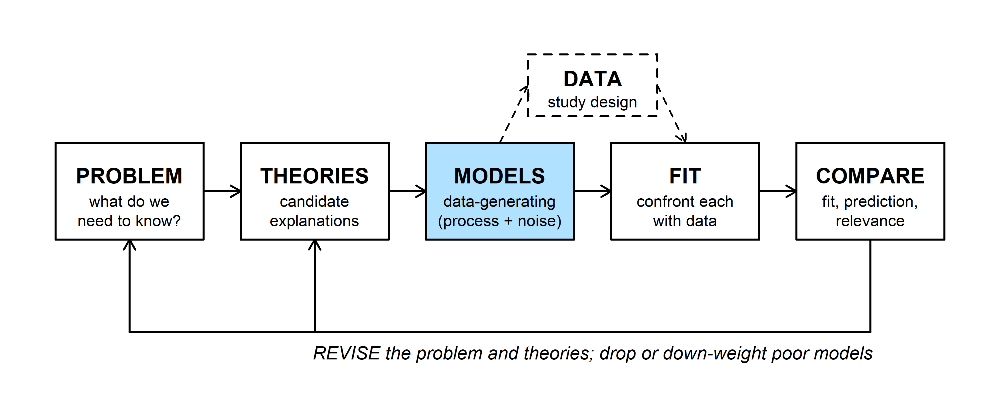
Most models in this course have two parts: a deterministic function for the expected value of the response, and a probability distribution for the scatter around it. This week is about the first part, the shapes available for the MODELS box.
Vonesh and Bolker (2005) put reed frog tadpoles of five sizes in tanks with a dragonfly larva and counted how many of 10 were eaten. Medium tadpoles did worst: small ones may be overlooked, and large ones are hard to catch.
frogs <- read.csv(
"https://kevintshoemaker.github.io/NRES-746/data/ReedfrogSizepred.csv"
)
set.seed(1)
plot(jitter(frogs$TBL, amount = 0.5), frogs$Kill, pch = 21, bg = "grey70",
cex = 1.3, xlab = "Tadpole size, TBL (mm)",
ylab = "Number killed (of 10)")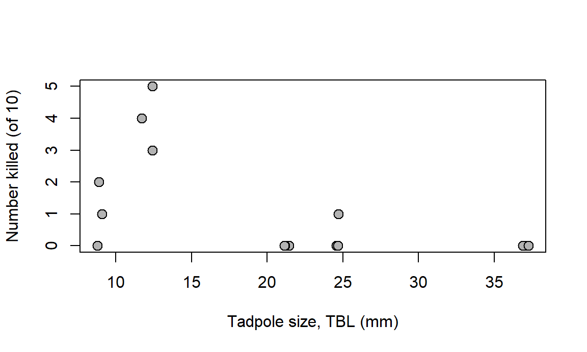
To model this hump we need a function that starts at zero, rises, peaks, and falls back. Which functions do that, and what do their parameters mean? Bolker gives two ways to find out. Numerically: plug in values and plot. Analytically: use algebra and calculus to say what the function does at its extremes and where it turns. The plot shows what a curve looks like; the algebra says why, including in regions you didn't plot.
2. WOD: R syntax and a seasonal function
The WOD (a short warm-up exercise at the start of class) had two parts: three R snippets with one bug each, and a seasonal function to build from \(\sin\).
Bug 1: argument order. The function takes its arguments in the order (a, b, x), but the call was written as if x came first:
ricker_abx <- function(a, b, x) {
a * x * exp(-b * x)
}
ricker_abx(10, 2, 0.5) # R reads a = 10, b = 2, x = 0.5## [1] 1.839397ricker_abx(a = 2, b = 0.5, x = 10) # what was intended## [1] 0.1347589No error, just a wrong number. Unnamed arguments are matched by position. The fix is to name the arguments, or better, to follow the usual convention of putting x first (section 3).
Bug 2: math notation in R. R has no built-in constant e; the exponential function is exp().
a <- 2
b <- 0.3
curve(a * x * e^(-b * x), from = 0, to = 15)## Error in eval(expr, envir = ll, enclos = parent.frame()): object 'e' not foundcurve(a * x * exp(-b * x), from = 0, to = 15, lwd = 2,
xlab = "x", ylab = "f(x)")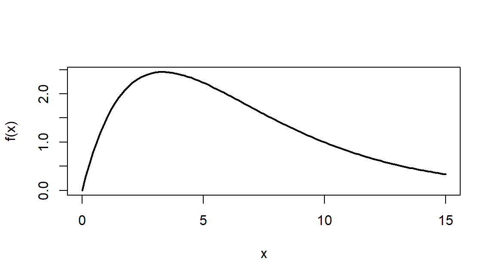
Bug 3: calling a function instead of passing it. sapply() needs a function to apply. Writing ricker() calls the function right away, with no arguments:
ricker <- function(x, a, b = 0.2) a * x * exp(-b * x)
avals <- c(0.5, 1, 1.5)
sapply(avals, ricker(), x = 5)## Error in ricker(): argument "a" is missing, with no defaultsapply(avals, ricker, x = 5)## [1] 0.9196986 1.8393972 2.7590958Without the parentheses, sapply() gets the function itself. Extra named arguments (x = 5) pass through to every call, and each element of avals fills the first argument not already named, which is a.
A seasonal function. The target repeats every 365 days, ranges from 0 to 10, and rises fastest on day 91 (April 1). Build it in three steps from \(\sin(u)\), which has period \(2\pi\), ranges from \(-1\) to \(1\), and rises fastest at \(u = 0\):
- period: \(\sin(2\pi t / 365)\) repeats every 365 days;
- range: \(5 + 5\sin(\cdot)\) runs from 0 to 10;
- timing: replacing \(t\) with \(t - 91\) moves the fastest rise to day 91.
\[y(t) = 5 + 5\sin\left(\frac{2\pi (t - 91)}{365}\right)\]
seasonal <- function(t) 5 + 5 * sin(2 * pi * (t - 91) / 365)
curve(seasonal(x), from = 1, to = 365, lwd = 2,
xlab = "Day of year", ylab = "y(t)")
abline(v = 91, lty = 2, col = "grey50")
abline(h = 5, lty = 3, col = "grey70")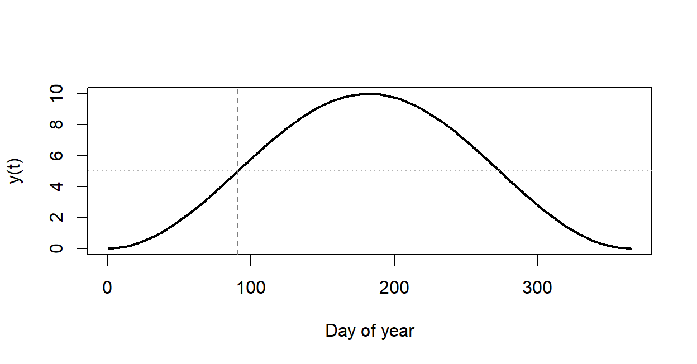
Day length fits this shape reasonably well: it changes fastest near the spring equinox (about day 79 in the northern hemisphere). Seasonal water temperature in a lake is another candidate, with a lag. Day 91 is a special kind of point that comes back in the bestiary section.
3. Writing and plotting functions in R
Bolker's advice (3.3.1) is to write each model function with the input value x first, then the parameters, with sensible defaults:
micmen <- function(x, a = 2, b = 1) a * x / (b + x)
micmen(3) # uses the defaults a = 2, b = 1## [1] 1.5micmen(3, b = 5) # override one parameter by name## [1] 0.75Putting x first makes the function work with tools that feed values into the first argument, like sapply() and curve(). curve() evaluates an expression in x over a range and draws it; add = TRUE puts more curves on the same plot:
curve(micmen(x), from = 0, to = 8, ylim = c(0, 9), lwd = 2,
xlab = "x", ylab = "f(x)")
curve(micmen(x, b = 3), add = TRUE, lwd = 2, col = "steelblue")
curve(micmen(x, a = 8), add = TRUE, lwd = 2, col = "darkorange")
abline(h = c(2, 8), lty = 3, col = "grey60")
legend("topleft", c("a = 2, b = 1", "a = 2, b = 3", "a = 8, b = 1"),
col = c("black", "steelblue", "darkorange"), lwd = 2, bty = "n")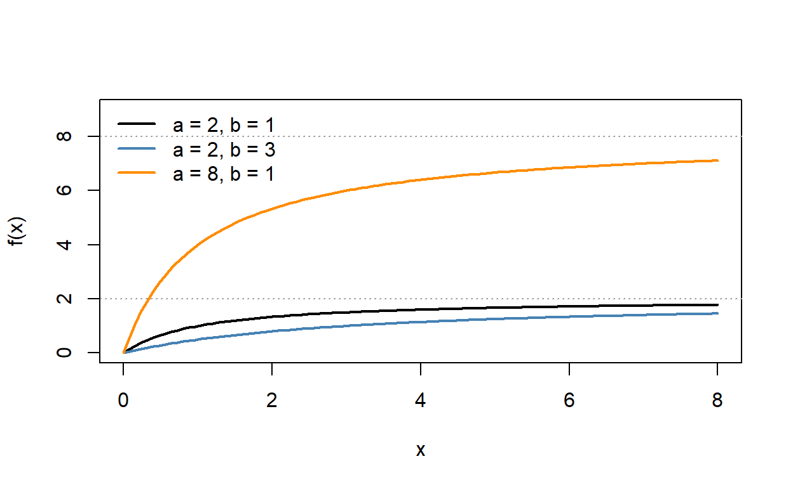
Changing \(a\) moves the ceiling the curve levels off at; changing \(b\) changes how fast it gets there. Section 4 shows why.
micmen() works on a whole vector at once because *, /, and + are vectorized: they act element by element. A function built with if is not, because if looks at a single TRUE or FALSE. The hockey stick (a line that stops rising at a breakpoint \(s\)) shows the problem:
hockey_if <- function(x, a = 1, s = 5) {
if (x < s) a * x else a * s
}
hockey_if(3) # one value: fine## [1] 3hockey_if(c(3, 7)) # a vector: error## Error in if (x < s) a * x else a * s: the condition has length > 1Two fixes: apply the function to one value at a time with sapply(), or rewrite it with the vectorized ifelse() (Bolker's choice for piecewise functions):
sapply(c(3, 7), hockey_if)## [1] 3 5hockey <- function(x, a = 1, s = 5) ifelse(x < s, a * x, a * s)
hockey(c(3, 7))## [1] 3 5Question:
curve(hockey_if(x), from = 0, to = 10)fails, butcurve(hockey(x), from = 0, to = 10)works. What doescurve()pass to the function, and why does that break theifversion?
4. Limits: throw out the lower-order terms
What does a function do as \(x\) gets very large or very small? Bolker's rule (3.4.1): throw out the lower-order terms. As \(x\to\infty\),
\[\text{exponential} \;\gg\; x^{\text{large power}} \;\gg\; x^{\text{small power}} \;\gg\; \text{constant}.\]
As \(x \to 0\) the order reverses: constants beat positive powers of \(x\), and negative powers (\(1/x\), \(1/x^2\)) beat everything. Keep the term that wins and drop the rest.
Michaelis-Menten, \(f(x) = \dfrac{ax}{b+x}\):
- As \(x \to \infty\), \(x\) dwarfs \(b\), so \(b + x \approx x\) and \(f(x) \approx ax/x = a\). The curve levels off at the asymptote \(a\).
- As \(x \to 0\), \(b\) dwarfs \(x\), so \(b + x \approx b\) and \(f(x) \approx (a/b)\,x\), a straight line through the origin with slope \(a/b\).
The same parameter, \(b\), is negligible at one end and dominant at the other. This is reasoning about which term matters, not substituting \(x = \infty\).
a_mm <- 10
b_mm <- 5
curve(micmen(x, a = a_mm, b = b_mm), from = 0, to = 60, lwd = 2.5,
ylim = c(0, 12), xlab = "x", ylab = "f(x)")
curve(a_mm / b_mm * x, add = TRUE, lty = 2, lwd = 2, col = "steelblue")
abline(h = a_mm, lty = 3, lwd = 2, col = "darkorange")
legend("bottomright", c("f(x)", "small-x line, ax/b", "asymptote, a"),
col = c("black", "steelblue", "darkorange"), lty = c(1, 2, 3),
lwd = 2, bty = "n")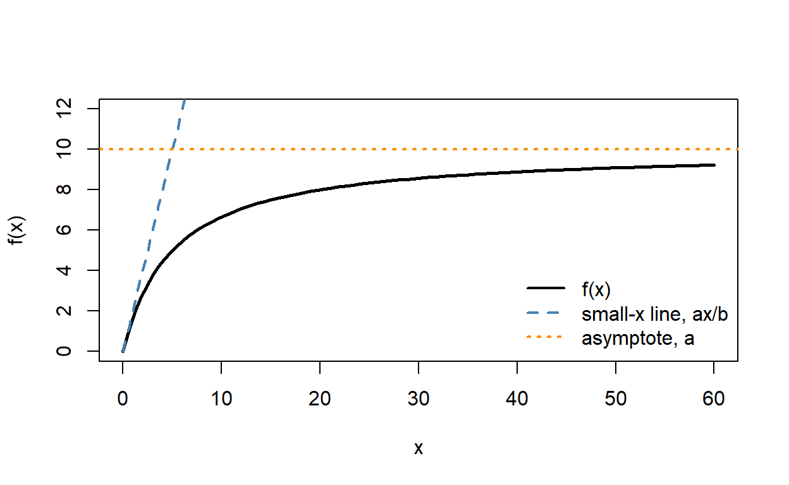
Approaching the asymptote is slow. At \(x = b\) the curve is halfway there, and at \(x = 9b\) it has reached only 90% of \(a\):
micmen(c(b_mm, 9 * b_mm), a = a_mm, b = b_mm) / a_mm## [1] 0.5 0.9When the numerator and denominator both vanish or both blow up (a \(0/0\) or \(\infty/\infty\) form) and dropping terms doesn't settle it, L'Hôpital's rule replaces the fraction with the ratio of the two derivatives.
The widget plots each function on log-log axes, where powers of \(x\) become straight lines. The dashed lines are the small-\(x\) and large-\(x\) approximations, and each card shows how close an approximation is (a ratio of 1 means exact).
Question: Choose Holling type III, \(ax^2/(b^2 + x^2)\), and move \(x\) from 0.001 to 1000. At small \(x\), why does the curve run parallel to the line of slope 2 rather than slope 1? Where along the axis is neither approximation good, and how does that zone move when you change \(b\)?
5. Derivatives and critical points
Limits describe the ends; derivatives describe the middle. A critical point is where the slope \(f'(x)\) is zero: a candidate peak or trough.
Ricker, \(f(x) = a x e^{-bx}\). The product rule gives
\[f'(x) = a e^{-bx} + ax\left(-b e^{-bx}\right) = a(1 - bx)\,e^{-bx}.\]
\(a e^{-bx}\) is never zero, so the slope is zero only where \(1 - bx = 0\): the peak is at \(x^* = 1/b\), with height \(f(1/b) = a/(be)\). R can take simple derivatives symbolically, and optimize() finds the peak numerically, which is a useful check:
D(quote(a * x * exp(-b * x)), "x")## a * exp(-b * x) - a * x * (exp(-b * x) * b)a_rk <- 0.9
b_rk <- 1 / 12
ricker_ab <- function(x, a, b) a * x * exp(-b * x)
optimize(ricker_ab, c(0, 40), a = a_rk, b = b_rk, maximum = TRUE)## $maximum
## [1] 12
##
## $objective
## [1] 3.973098c(peak = 1 / b_rk, height = a_rk / (b_rk * exp(1)))## peak height
## 12.000000 3.973098D() doesn't simplify, but its answer is the same expression. With the candidate values used for the tadpoles in Lab 1 (\(a = 0.9\), \(b = 1/12\)) the peak is at 12 mm with height 3.97.
Michaelis-Menten has no critical point. The quotient rule gives
\[f'(x) = \frac{(b + x)\,a - ax}{(b+x)^2} = \frac{ab}{(b + x)^2},\]
which is positive for every \(x\) (when \(a\) and \(b\) are positive). The function is monotonic: always rising, never turning, so it saturates instead of peaking. Near zero the slope is \(a/b\), the same slope as the small-\(x\) line in section 4.
Two different questions use the same function. A root is where \(f(x) = 0\); a critical point is where \(f'(x) = 0\). The Ricker function has a root at \(x = 0\) and a critical point at \(x = 1/b\).
Question: Doubling \(a\) in the Ricker function changes the peak's height but not its location. What does doubling \(b\) do to each? Which parameter would you change to describe tadpoles that are vulnerable over a wider range of sizes?
Discussion
- Pick a quantity from your own field that saturates as some predictor grows. What, physically or biologically, sets the ceiling (the role of \(a\) in Michaelis-Menten), and what sets how quickly the curve gets there (the role of \(b\))?
- A quadratic, \(y = 0.2 + 0.05x - 0.001x^2\), fits seedling survival well for soil moisture between 5% and 40% (it predicts 0.60 at 40%). It predicts -0.40 at 60%. What went wrong, and what would the limits of a better function need to look like?
- Bolker warns against experimenting numerically before you understand a function's parameters, which turns the computer into "an expensive guessing tool." When is plotting a few parameter values enough, and when do you need the algebra?
Repeating a calculation in R
Fitting a curve by checking many parameter values, or asking how much an answer would change with different data, means doing one calculation over and over. This part covers the ways R repeats a calculation: for loops, vectorized arithmetic, the apply family, grids over two inputs, and repeated random draws.
1. Big picture

The FIT step confronts a model with data. Before the shortcuts come later in the semester (likelihood, optimization), fitting is a search: try a parameter value, score it, try another. Most of the code is a loop around a function like the ones in the first part.
2. Loops, vectorization, and sapply
Three ways to evaluate micmen() over a vector of \(x\) values (Bolker 3.7.1):
xvec <- seq(0, 10, by = 0.5)
y_loop <- numeric(length(xvec)) # set aside storage first
for (i in seq_along(xvec)) {
y_loop[i] <- micmen(xvec[i])
}
y_vec <- micmen(xvec) # vectorized
y_sap <- sapply(xvec, micmen) # apply to each element
all.equal(y_loop, y_vec)## [1] TRUEall.equal(y_sap, y_vec)## [1] TRUEAll three give the same numbers. Vectorized code is shortest and fastest; a for loop is the most general (each step can use earlier results, as in a population projection); sapply() sits between them and works on functions that aren't vectorized.
sapply() can also run over parameter values instead of \(x\) values. When each call returns a vector, the results come back as a matrix with one column per parameter value, ready for matplot():
bvals <- c(0.5, 1, 2, 4, 8)
curves <- sapply(bvals, function(b) micmen(xvec, a = 2, b = b))
dim(curves)## [1] 21 5matplot(xvec, curves, type = "l", lty = 1, lwd = 2,
col = hcl.colors(5, "Viridis"), xlab = "x", ylab = "f(x)")
legend("bottomright", paste("b =", bvals), col = hcl.colors(5, "Viridis"),
lwd = 2, bty = "n")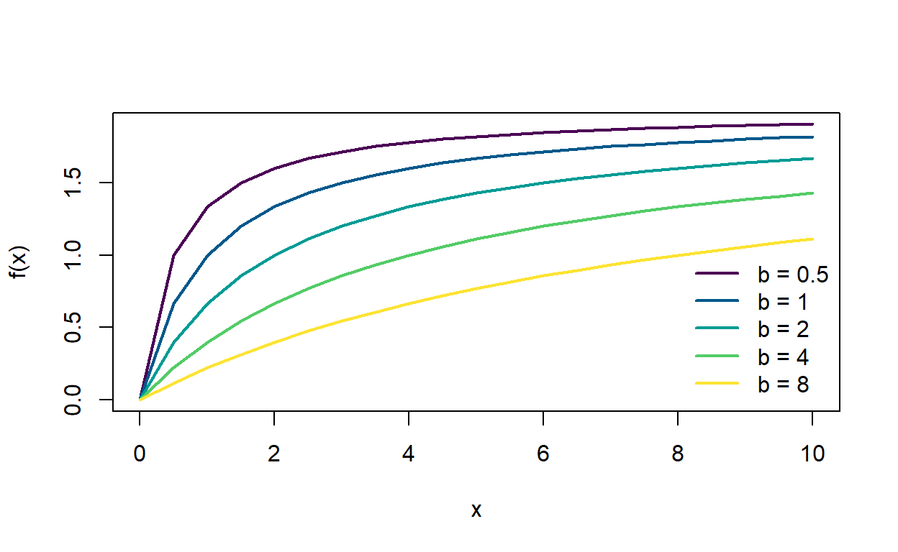
The function inside sapply() is an anonymous function: it has no name and exists only for this call. It holds a and \(x\) fixed and lets b vary.
Question:
curveshas 21 rows and 5 columns. Which dimension goes with \(x\) and which with \(b\)? How could you check without counting?
3. Functions of two inputs
For a function of two variables, outer() evaluates it at every combination of two vectors and returns a matrix (Bolker 3.3.2). Bolker's example combines prey density with predator attack rate. With a Holling type II functional response, the per-capita risk to a tadpole at density \(N\) is \(\alpha / (1 + \alpha h N)\), where \(\alpha\) is the attack rate and \(h\) the handling time:
risk <- function(N, alpha, h = 0.84) alpha / (1 + alpha * h * N)
N_vals <- seq(1, 40, length.out = 40)
alpha_vals <- seq(0.01, 0.5, length.out = 40)
risk_grid <- outer(N_vals, alpha_vals, risk)
dim(risk_grid)## [1] 40 40par(mfrow = c(1, 2), mar = c(4, 4, 1, 1))
persp(N_vals, alpha_vals, risk_grid, theta = 40, phi = 25,
xlab = "Density N", ylab = "Attack rate", zlab = "Risk",
col = "lightskyblue1", border = "grey40")
image(N_vals, alpha_vals, risk_grid, col = hcl.colors(30, "YlOrRd", rev = TRUE),
xlab = "Density N", ylab = "Attack rate")
contour(N_vals, alpha_vals, risk_grid, add = TRUE)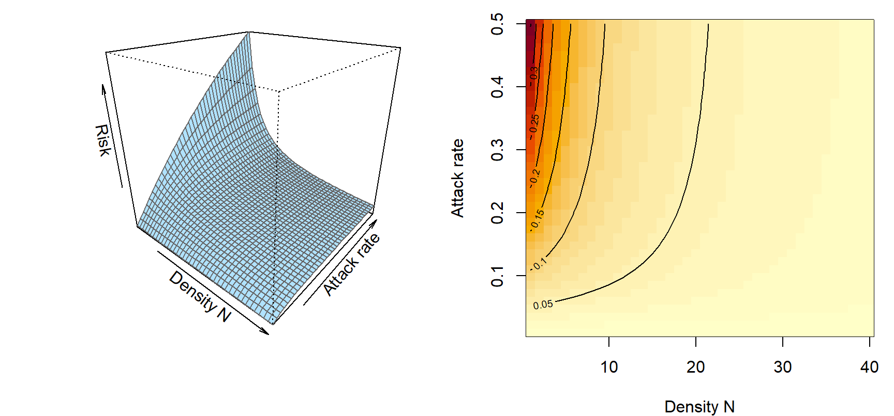
persp() draws a 3-D surface, and image() with contour() draws the same matrix as a map. outer() needs a vectorized function; for one that isn't, wrap it in Vectorize() first.
Question: Along a line of fixed attack rate, risk falls as density rises. Why, in terms of what a predator does with its time? Where on the map does density make the least difference?
4. Repeating a random calculation
sample() draws values at random from a vector, and replicate() repeats any expression and collects the results. Suppose 20 quadrats were surveyed, but a cheaper design would visit only 5. How much would the mean count vary from one random set of 5 to another?
counts <- c(0, 2, 1, 4, 3, 0, 7, 2, 5, 1, 3, 0, 2, 6, 1, 4, 2, 3, 0, 9)
mean(counts)## [1] 2.75set.seed(2)
sample(counts, 5) # one random set of 5 quadrats## [1] 1 0 0 2 0means5 <- replicate(2000, mean(sample(counts, 5)))
quantile(means5, c(0.025, 0.975))## 2.5% 97.5%
## 1.0 4.8hist(means5, breaks = 30, col = "grey80", border = "white",
xlab = "Mean count in 5 random quadrats", main = "")
abline(v = mean(counts), col = "darkorange", lwd = 2)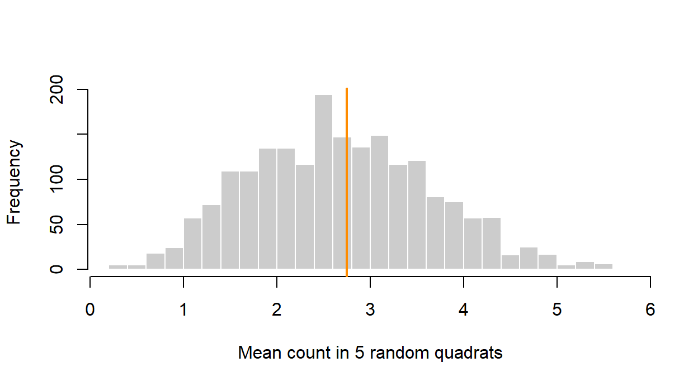
Five quadrats give a mean anywhere from about 1.00 to 4.80 (the middle 95%), around the full-survey mean of 2.75. By default sample() draws without replacement; sample(counts, replace = TRUE) lets a value be drawn more than once. Resampling with replacement is the basis of the bootstrap, introduced with algorithms for inference.
Question: How would the histogram change with 10 quadrats instead of 5? What happens if you draw all 20 quadrats without replacement, and what does that say about why the bootstrap draws with replacement?
The bestiary of functions
Bolker's bestiary (3.5) is a catalog of functions that recur in ecological models. He suggests treating it as a map rather than a list to memorize: know the families and their shapes, then use the tools from the first part to read any member you meet. This part adds one more tool, the inflection point, then tours the families.
1. Big picture

Choosing a deterministic function is a modeling decision. Sometimes a mechanism dictates the shape (a predator's handling time gives a saturating curve); sometimes we only need a flexible shape that follows the data. Either way, the shape is part of the hypothesis, and competing shapes are competing models to COMPARE later in the semester.
2. WOD: limits and a derivative
The WOD asked for the limits of four bestiary functions, then about the slope of the logistic at its midpoint.
| Function | Formula | As x goes to 0 | As x goes to infinity |
|---|---|---|---|
| Michaelis-Menten | \(ax/(b+x)\) | \(\approx (a/b)\,x \to 0\) | \(a\) |
| Ricker | \(axe^{-bx}\) | \(\approx ax \to 0\) | \(0\) |
| Logistic | \(1/(1+e^{-bx})\) | \(1/2\) | \(1\) |
| Holling type III | \(ax^2/(b^2+x^2)\) | \(\approx (a/b^2)\,x^2 \to 0\) | \(a\) |
Two of these need care. The logistic is defined for negative \(x\) too, and at \(x = 0\) it is exactly \(1/(1 + 1) = 1/2\); it runs from 0 (as \(x \to -\infty\)) to 1. Holling type III has the same power of \(x\) on top and bottom. Dropping terms still works: drop the lower-order term within the denominator (\(b^2 \ll x^2\)), then simplify, \(ax^2/x^2 = a\). Near zero the \(x^2\) in the numerator makes the curve leave the origin flat, unlike Michaelis-Menten.
The logistic's slope. Write \(f(x) = (1 + e^{-bx})^{-1}\) and use the chain rule twice:
\[f'(x) = -(1 + e^{-bx})^{-2} \cdot \left(-b e^{-bx}\right) = \frac{b\,e^{-bx}}{(1 + e^{-bx})^2}, \qquad f'(0) = \frac{b}{4}.\]
logis_b <- function(x, b = 1) 1 / (1 + exp(-b * x))
D(quote(1 / (1 + exp(-b * x))), "x")## exp(-b * x) * b/(1 + exp(-b * x))^2b <- 2
(logis_b(1e-6, b) - logis_b(-1e-6, b)) / 2e-6 # numerical slope at 0## [1] 0.5b / 4## [1] 0.5The slope at the midpoint is \(b/4\), not zero, so \(x = 0\) is not a critical point. It is the steepest point on the curve, which is the subject of the next section.
3. Critical points and inflection points
The second derivative \(f''(x)\) is the rate of change of the slope. Where \(f'' > 0\) the slope is increasing and the curve bends upward (concave up); where \(f'' < 0\) it bends downward (concave down). An inflection point is where the concavity flips, so \(f''(x) = 0\) and changes sign there. At an inflection point the slope is at its largest (or most negative) nearby, which is the opposite of a critical point:
- critical point: \(f'(x) = 0\), the curve is flattest there (a peak or trough);
- inflection point: \(f''(x) = 0\) with a sign change, the curve is steepest there.
The logistic bends upward below its midpoint and downward above it, so the midpoint is its one inflection point. Bolker works the second derivative out (3.4.7) and finds \(f''(0) = 0\) for every \(b\). The seasonal function from the WOD has the same feature on day 91: the fastest rise, not a peak. A sine curve has an inflection point every half cycle, at each midline crossing.
Functions can have both kinds of point. The Ricker function peaks at \(1/b\) and has an inflection point at \(2/b\), after the peak, where it is falling fastest:
d2 <- D(D(quote(a * x * exp(-b * x)), "x"), "x")
a <- 2
b <- 0.5
eval(d2, list(x = 2 / b, a = a, b = b)) # second derivative at 2/b## [1] 0The widget shows each function with its tangent line at a chosen point and its slope in the lower panel. The shading marks where each function is concave up (blue) or concave down (orange).
Question: Choose Michaelis-Menten. Why do both buttons stay greyed out? Now choose Holling type III, which also levels off at \(a\). What does it have that Michaelis-Menten lacks, and what does that say about how a predator treats rare prey?
Sigmoid curves don't all have their inflection halfway up. The Gompertz function, \(f(x) = e^{-a e^{-bx}}\), has its inflection at height \(1/e \approx 0.37\), about a third of the way to its asymptote of 1, so its approach to the top is slower than its start.
4. A map of the bestiary
Bolker's Table 3.1 sorts the bestiary into families by how the formula is built:
| Family | Function | Formula | Shape |
|---|---|---|---|
| Polynomial | Line | \(a + bx\) | monotonic |
| Quadratic | \(a + bx + cx^2\) | one peak or trough | |
| Piecewise | Hockey stick | \(ax\) below \(s\), \(as\) above | rises, then flat |
| Rational | Hyperbolic | \(a/(b + x)\) | decreasing |
| Michaelis-Menten | \(ax/(b + x)\) | saturating | |
| Holling type III | \(ax^2/(b^2 + x^2)\) | sigmoid | |
| Exponential-based | Negative exponential | \(ae^{-bx}\) | decreasing |
| Monomolecular | \(a(1 - e^{-bx})\) | saturating | |
| Ricker | \(axe^{-bx}\) | hump-shaped | |
| Logistic | \(e^{a+bx}/(1 + e^{a+bx})\) | sigmoid | |
| Power-based | Power law | \(ax^b\) | monotonic |
| Shepherd | \(ax/(b + x^c)\) | saturating or hump-shaped |
- Polynomials are easy to fit and can be simplified by setting coefficients to zero, but they rarely have a mechanism behind them and head off to \(\pm\infty\) outside the data.
- Piecewise functions make sense when biology has a switch (a gut that fills, a refuge that runs out), but the jump in slope makes them harder to fit.
- Rational functions (ratios of polynomials) can level off at finite asymptotes and often come straight from a mechanism, such as handling time. They approach their asymptotes slowly, so the asymptote can be hard to estimate. Holling type IV, \(ax^2/(b + cx + x^2)\) with \(c < 0\), is hump-shaped; other sources call a different formula Holling type IV, with \(x\) in the numerator instead of \(x^2\), and the two behave differently at large \(x\).
- Exponential-based functions describe constant proportional change: decay, saturation, density-dependent recruitment (Ricker), and probabilities that change with a predictor (logistic).
- Power-based functions add an exponent, either from geometry (allometry) or to make another function more flexible. Exponents are often hard to estimate from modest data sets.
The widget plots one function at a time. The cards give its value at zero, its behavior for large \(x\), and one landmark (a peak, half-max, or inflection), with the dashed lines marking asymptotes and the landmark.
Question: Choose the Shepherd function and move \(c\) from 0.5 to 3. For which values does the curve have a peak? Which function in the table does it turn into at \(c = 1\)? If tadpole predation data looked hump-shaped, what would a fitted \(c\) well above 1 say?
5. Where shapes come from
A phenomenological function describes a pattern; a mechanistic one is derived from a process, so its parameters mean something (Bolker 3.2). The same formula can be either, depending on how it is used.
The logistic from population growth. If per-capita growth declines linearly from \(r\) at low density to zero at the carrying capacity \(K\),
\[\frac{dn}{dt} = r n \left(1 - \frac{n}{K}\right),\]
and solving that equation gives the logistic, \(n(t) = K \big/ \left(1 + (K/n_0 - 1)e^{-rt}\right)\) (Bolker 3.5.2.2). A for loop that takes small steps in time (Euler's method) gets the same curve without solving anything:
r <- 0.5
K <- 100
n0 <- 2
dt <- 0.1
times <- seq(0, 25, by = dt)
n <- numeric(length(times))
n[1] <- n0
for (i in seq_along(times)[-1]) {
n[i] <- n[i - 1] + r * n[i - 1] * (1 - n[i - 1] / K) * dt
}
plot(times, n, type = "l", lwd = 4, col = "grey70",
xlab = "Time", ylab = "Population size")
curve(K / (1 + (K / n0 - 1) * exp(-r * x)), add = TRUE, lwd = 2, lty = 2)
abline(h = K / 2, lty = 3, col = "grey50")
legend("bottomright", c("Euler loop", "logistic formula"),
col = c("grey70", "black"), lwd = c(4, 2), lty = c(1, 2), bty = "n")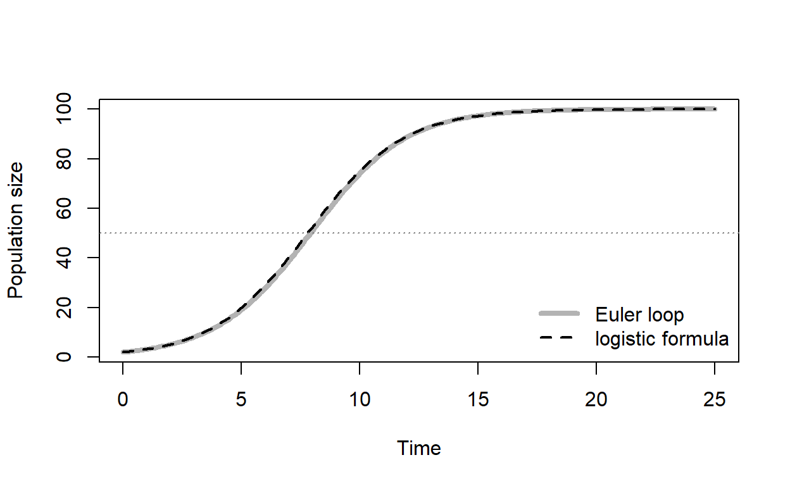
The population grows fastest at \(K/2 =\) 50, the inflection point.
Michaelis-Menten from handling time. A predator that spends time \(h\) handling each prey and attacks at rate \(\alpha\) eats \(P(N) = \alpha N/(1 + \alpha h N)\) prey per unit time. This is Michaelis-Menten with asymptote \(1/h\) and initial slope \(\alpha\): at low density, intake is limited by finding prey; at high density, by handling it.
Similar shapes, different formulas. The monomolecular function \(a(1 - e^{-bx})\) also saturates, but it closes the gap to its asymptote by a constant fraction per unit \(x\), so it gets there faster than Michaelis-Menten. Take a monomolecular curve with asymptote 5 and find the Michaelis-Menten curve closest to it over \(0 \le x \le 15\). (optim() searches for the parameter values that make a function as small as possible; it gets a full treatment later in the semester.)
mono_curve <- function(x) 5 * (1 - exp(-0.4 * x))
x_grid <- seq(0, 15, by = 0.01)
gap_ss <- function(p) sum((micmen(x_grid, a = p[1], b = p[2]) - mono_curve(x_grid))^2)
mm_fit <- optim(c(6, 3), gap_ss)$par # closest Michaelis-Menten: a, b
mm_fit## [1] 5.925589 2.113942max_gap <- max(abs(micmen(x_grid, mm_fit[1], mm_fit[2]) - mono_curve(x_grid)))
max_gap## [1] 0.2581975curve(mono_curve(x), from = 0, to = 15, lwd = 2, ylim = c(0, 6.2),
xlab = "x", ylab = "f(x)")
curve(micmen(x, mm_fit[1], mm_fit[2]), add = TRUE, lwd = 2, lty = 2,
col = "steelblue")
abline(h = c(5, mm_fit[1]), lty = 3, col = c("black", "steelblue"))
legend("bottomright", c("monomolecular", "closest Michaelis-Menten"),
col = c("black", "steelblue"), lty = c(1, 2), lwd = 2, bty = "n")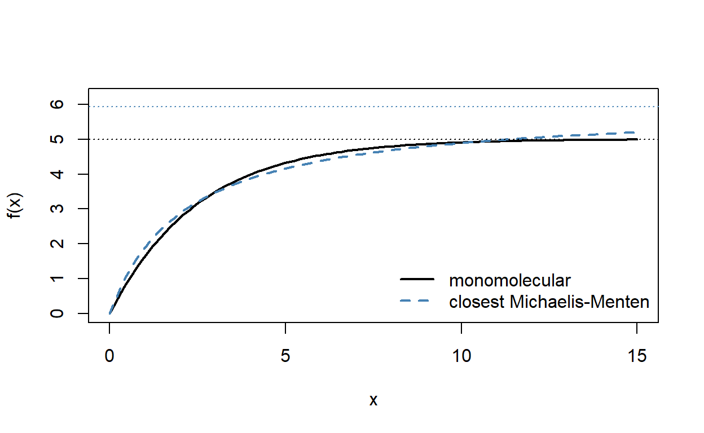
Over the range plotted, the curves never differ by more than 0.26 on a scale of 5. With noisy data, telling them apart may be hopeless, and the choice comes down to which mechanism is more plausible (Bolker 3.5.2.1). The choice still matters: the two curves level off at different heights (dotted lines), 5 for the monomolecular and 5.93 for Michaelis-Menten, so the estimated maximum depends on which function you picked.
Question: Suppose \(x\) is prey density and the curve is a predator's feeding rate, measured only up to \(x = 15\). The two functions fit equally well. A manager asks for the maximum feeding rate. What do you tell them, and what data would settle it?
Discussion
- Bolker fit a Ricker curve to the tadpole predation data and found it peaked too early and fell too slowly (his Figure 3.1). He then tried two other hump-shaped functions with an extra parameter. What do you gain by adding a parameter to make a function more flexible, and what might you lose?
- A colleague fits a logistic curve to the proportion of seeds that germinate as a function of soil temperature and reports the inflection point as "the optimal temperature." Is that the right name for it? What would the curve need to look like for an optimum to exist?
- Name a relationship from your own field that you think has a threshold or switch. Would you model it with a hockey stick, a steep logistic, or something else, and what would the data need to show to tell those apart?
Bonus: Taylor approximations
Near a point \(x_0\), a function looks like a polynomial built from its derivatives there (Bolker 3.4.7):
\[f(x) \approx f(x_0) + f'(x_0)(x - x_0) + \frac{f''(x_0)}{2}(x - x_0)^2.\]
Near zero, \(e^{-bx} \approx 1 - bx\), so the Ricker function is close to \(ax - abx^2\): it starts as a line of slope \(a\) and bends down right away. The logistic near its midpoint is close to the straight line \(1/2 + (b/4)x\), because \(f''(0) = 0\) removes the quadratic term.
par(mfrow = c(1, 2), mar = c(4, 4, 2, 1))
curve(ricker_ab(x, a = 2, b = 0.5), from = 0, to = 4, lwd = 2.5,
ylim = c(0, 2), xlab = "x", ylab = "f(x)", main = "Ricker near 0")
curve(2 * x - 2 * 0.5 * x^2, add = TRUE, lty = 2, lwd = 2, col = "steelblue")
curve(logis_b(x, b = 1), from = -5, to = 5, lwd = 2.5, ylim = c(0, 1),
xlab = "x", ylab = "f(x)", main = "Logistic near its midpoint")
curve(0.5 + x / 4, add = TRUE, lty = 2, lwd = 2, col = "steelblue")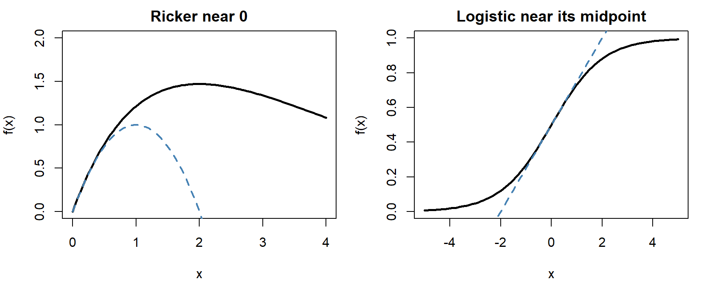
Quadratic approximations come back later in the semester, where the shape of a likelihood near its peak sets the width of a confidence interval.
Bonus: changing parameters and transforming axes
Scale and location. A parameter that multiplies or divides \(x\), as in \(bx\) or \(x/c\), stretches the curve along the \(x\)-axis without changing its shape. Bolker calls it a scale parameter. For the negative exponential \(ae^{-bx}\), \(1/b\) is the distance over which the function falls by a factor of \(e\), and \(\ln 2/b\) is its half-life. For Michaelis-Menten, \(b\) is the half-maximum, the \(x\) at which the curve reaches \(a/2\). Subtracting a constant \(c\) from \(x\) shifts the curve right, and adding \(d\) to the whole function shifts it up (Bolker 3.4.6):
mm_shift <- function(x, a = 4, b = 2, c = 3, d = 1) {
ifelse(x < c, d, a * (x - c) / (b + (x - c)) + d)
}
curve(mm_shift(x), from = 0, to = 25, lwd = 2, ylim = c(0, 5.5),
xlab = "x", ylab = "f(x)")
abline(h = c(1, 3, 5), v = c(3, 5), lty = 3, col = "grey60")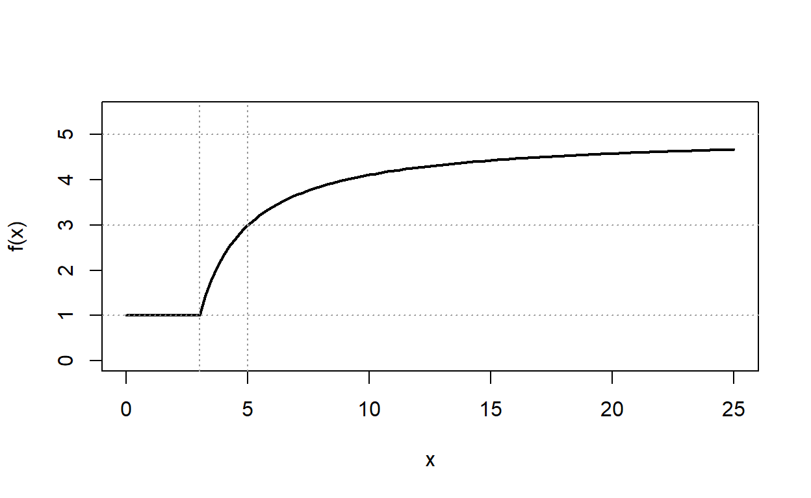
The curve starts rising at \(x = c = 3\) from a floor of \(d = 1\), reaches half its rise (\(d + a/2 = 3\)) at \(x = c + b = 5\), and approaches \(a + d = 5\).
Reparameterizing. The same curve can be written with different parameters. As a functional response, Michaelis-Menten is usually \(\alpha N/(1 + \alpha h N)\) (attack rate and handling time); in biochemistry it is \(v_{max} C/(K_m + C)\) (maximum rate and half-max). Pick the version whose parameters you can interpret, or estimate by eye.
Linearizing transformations. Some transformations turn a curve into a straight line, which makes slopes and intercepts easy to read off a plot:
- negative exponential: \(\log y = \log a - bx\) (a semi-log plot);
- power law: \(\log y = \log a + b \log x\) (a log-log plot);
- logistic: \(\log\left(\dfrac{y}{1 - y}\right) = a + bx\) (the logit).
Before fast computers, these were the standard way to fit nonlinear curves. Fitting the original function directly is now usually better, but a transformed plot is still a quick way to check whether a function fits.